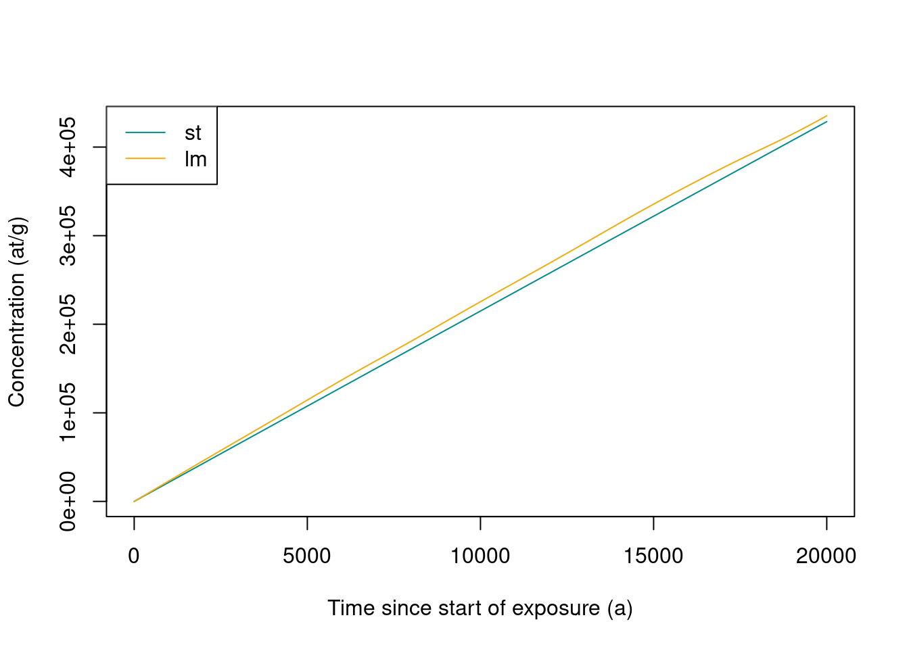

4 Exploring TCN build up at the surface
We are going to consider simple computations of concentration under various conditions in terms of erosion, depth or age. This will be done using an Eulerian point of view, which is the most straightforward and fastest way to perform such computation. In this case the quantity of interest (concentration) is computed at fixed depths below the surface, while the exhumed material is moving through this reference frame during its trajectory toward the surface. More details on the differences between Eulerian and Lagrangian approaches, and their applications to complex exposition/denudation histories, will be studied later.
Note that interpreting measured concentrations in terms of end-member situations of pure exposure or steady-state denudation is often done with online calculators (Balco et al. (2008),Marrero et al. (2016),Martin et al. (2017)). This will be fine in many cases, but you should always be careful about the underlying hypothesis (no erosion, steady state achieved…) when interpreting your concentrations and always think about how TCN are accumulating. The goal of this activity is to explore this behavior.
4.1 Background
The relevant general equation is the following,
\[ C=C_0e^{-\lambda t} + \sum_i \frac{P_i}{\frac{\rho \varepsilon}{\Lambda_i}+\lambda}e^{\frac{-\rho z}{\Lambda_i}}(1-e^{-(\frac{\rho \varepsilon}{\Lambda_i}+\lambda)t}) \] with the following variables and parameters,
- \(C\) the concentration (as a function of time \(t\) and depth \(z\))
- \(C_0\) the inherited concentration
- \(\lambda\) the decay constant for the considered nuclide
- \(P_i\) the scaled surface production rate for the nuclide of interest and the \(i\)-th production pathway (spallation, stopped muons, fast muons)
- \(\rho\) the density of the medium
- \(\Lambda_i\) the attenuation length for the particules of the \(i\)-th production pathway
- \(\varepsilon\) surface denudation
In order to stick with usual conventions in the following time \(t\) will be measured in years (a), the unit of length will be cm and the depths (\(z\)) will be expressed in g/cm\(^2\) (i.e. actual depth \(\times \rho\)).
Note two keys limitations of this representation :
- it does not allow to account for time variations of production rates (at least in its most straightforward implementation), so we will mostly using the st scaling
- it assumes exponential evolution of production with depth, which is clearly not the case for low energy neutrons (figure 2b from Gosse and Phillips (2001)) and is questionable in some situations for muons (Balco (2017))
4.2 Set up of the calculations
We should the define the basic parameters we are going to use for the computation, which are two vectors :
- a vector with the attenuation lengths for different particles (in g/cm\(^2\))
- neutrons for spallation reactions \(\Lambda_{spal}\)
- stopping muons \(\Lambda_{stop}\)
- fast muons \(\Lambda_{fast}\)
- a vector (or matrix) with the SLHL production rates (in at/g/a), in this case for the st scaling scheme (Stone (2000)), and decay constant \(\lambda\) (in 1/a) for the nuclide(s) of interest.
For easy reference a set of data for these parameters is included in the TCNtools package, including Sea-Level High-Latitude production rates for the st scaling scheme.
Note that these often used SLHL values are defined for convenience, most calculators for exposure age work directly with the production rate value at calibration sites, and that they are always relative to the scaling scheme used (Borchers et al. (2016)).
We can first load the attenuation length data (g/cm\(^2\)).
Documentation of this dataset is accessible with ?Lambda.
Code
data(Lambda) # we load a vector containing the attenuation length into the environment
print(Lambda)## Lspal Lstop Lfast
## 160 1500 4320Code
rho = 2.7 # we also define the density (g/cm3)Some production and decay parameters can also be loaded.
Documentation of this dataset is accessible with ?prm.
Code
data(prm) # we load a matrix containing the production/decay parameters into the environment
print(prm)## Be10 Al26 C14
## Pspal 4.01000e+00 2.793000e+01 1.224000e+01
## Pstop 1.20000e-02 8.400000e-01 3.310000e+00
## Pfast 3.90000e-02 8.100000e-02 0.000000e+00
## lambda 5.09667e-07 9.667325e-07 1.209681e-04We also need to define the properties of our site of interest and compute the relevant scaling parameters. As we already saw previously, this can easily be done with,
Code
altitude = 1000 # elevation in m
latitude = 45 # latitude in degrees
P = atm_pressure(alt=altitude,model="stone2000") # compute atmospheric pressure at site
S = scaling_st(P,latitude) # compute the scaling parameters according to Stone (2000)4.3 Evolution of concentration with time
To get a general overview of the behavior we are going to use directly the solv_conc_eul function, which allows to easily deal with various configurations. In the following sections we will go back to the key equations to get a better sense of the importance of various parameters
As always the documentation of the function, including its various arguments, can be obtained by typing ?solv_conc_eul in the R console.
Code
nuc = "Be10" # "Al26", "C14"
t = seq(0,200e3,length.out=1000) # a vector containing time from 0 to 100 ka by 100 a steps
z = 0 * rho # depth at which we are going to perform the calculation (cm converted to g/cm2)
C0 = 0 # inherited concentration (at/g)
ero = 0 * (100/1e6*rho) # denudation rate expressed in m/Ma and converted in g/cm2/a
C = solv_conc_eul(z,ero,t,C0,prm[,nuc],S,Lambda) # compute concentration
plot(t/1000,C,type="l",col="cornflowerblue",lwd=3,ylab="Concentration (at/g)",xlab="Time (ka)")
grid()
# see explanation for these lines below
Prod = c(prm[1,nuc]*S$Nneutrons,prm[2,nuc]*S$Nmuons,prm[3,nuc]*S$Nmuons) # scaled production vector (defined for the sake of clarity of the expressions below)
lambda = prm[4,nuc] # radiactive decay
abline(0,sum(Prod)*1000,lty=2) # note that time is in ka on the plot
abline(h=sum(Prod/((ero/Lambda)+lambda)),lty=2)
Start with zero erosion (\(\varepsilon=0\)), corresponding to the pure exposition of a surface. We see here the progressive build-up of concentration though time and the establishment of balance between gains (production) and losses (denudation and decay) leading to the concentration plateau at steady state.
Two lines are added to the graph,
- The first one corresponds to the production slope \(\sum_i P_i\), how much nuclide you produce and how it would accumulate if you had no radioactive decay and no denudation.
- The second one (horizontal) is the maximum value of concentration when steady state is achieved : \[ C_{max}=\sum_i \frac{P_i}{\frac{\rho \varepsilon}{\Lambda_i}+\lambda} \]
TODO
- Change the maximum of the
tvector until you see the influence of radioactive decay and the plateau. - Add some inheritance
- Test the evolution with other nuclides (\(^{26}\)Al and \(^{14}\)C)
You can also play around with this build up using this Shiny App :
http://shinyproxy.osupytheas.fr/simple_accumulation
Now try to modify the ero (always keeping it is in g/cm\(^2\)/a) parameter above, to see its influence on time needed to reach steady state and the final concentration.
4.4 Two end-member situations
No we are going to build a summary plot showing the influence of both exposure and denudation.
Code
altitude = 1000 # elevation in m
latitude = 45 # latitude in degrees
nuc = "Be10"
P = atm_pressure(alt=altitude,model="stone2000") # compute atmospheric pressure at site
S = scaling_st(P,latitude) # compute the scaling parameters according to Stone (2000)
t = 10^seq(log10(1),log10(10e6),length.out=1000) # time vector, log-spaced!
# calculation of the evolution of concentration for denudation = 0
C = solv_conc_eul(0,0,t,0,prm[,nuc],S,Lambda) # compute concentration for pure exposure
plot(t,C,type="l",col="cornflowerblue",lwd=3,ylab="Concentration (at/g)",xlab="Time (a)",log="xy")
grid()
text(max(t),max(C),0,cex=0.5,adj=0) # label the curve
# now we make the same computation for other denudation rates
ero = c(1,10,100,1000) # erosion vector in m/Ma
for (i in 1:length(ero)){
e = ero[i] * (100/1e6*rho) # convert denudation in g/cm2/a
C = solv_conc_eul(0,e,t,0,prm[,nuc],S,Lambda) # compute concentration for pure exposure
lines(t,C,col="cornflowerblue",lwd=3)
text(max(t),max(C),ero[i],cex=0.5,adj=0) # label the curve
}
Note that this a log-log plot. It is probably one of the most important figure to keep in mind when analyzing TCN concentrations. It clearly shows the existence of two end-member situations when interpreting these concentrations, in terms of exposure age or denudation rates, and the transition between the two.
TODO Think about a bit about the following points
- What are the key hypothesis made when interpreting a TCN concentration in terms of
- exposure age
- surface denudation
- Can you think of geological/geomorphological situations where these hypotheses are violated?
- Why are the plateau concentrations so different?
- How is the time to reach the plateau changing and why?